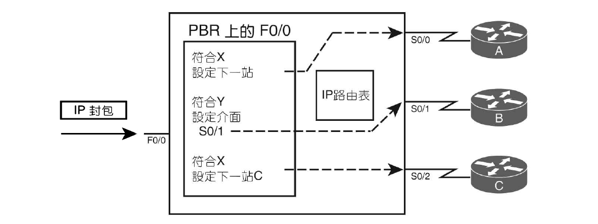
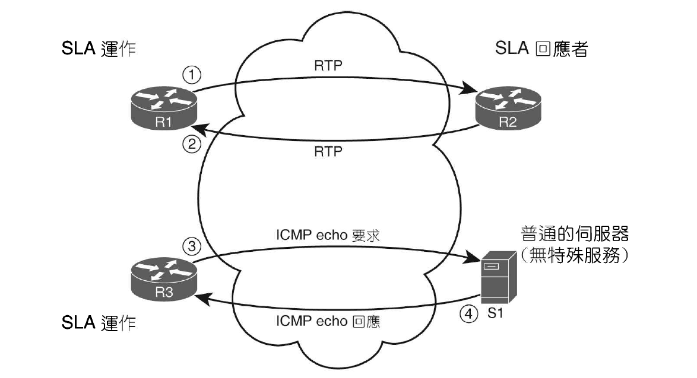
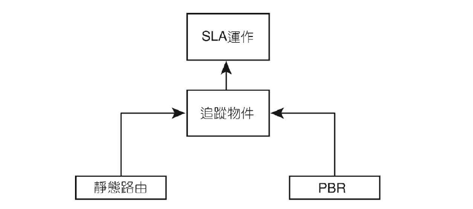

- 首頁
- 大二
- 大三
- 大四
- 英語相關
- 網路相關
- LAN Design
- Layer 2
- Layer 3
Policy-Based Routing
當封包到達入境介面時，路由器的資料層邏輯會採取若干步驟處理封包。檢查訊框檢查碼(Frame Check Sequence, FCS)沒問題後，變會移除 L2 標頭標尾，留下 L3 的封包，最後比對目的地位址與路由表是否一致。
原則型路由(PBR)優先於預設的目標型轉送邏輯，當在解除封裝時，PBR會先攔截封包，接著路由器才去查詢 CEF 表。
PBR 透過 route-map 來選擇轉送封包的方式。

route-map match:
match ip address：參照到 ACLmatch length {min} {max}：指定長度範圍
當封包符合 route-map，set 負責定義轉送封包所採取的動作。
set ip next-hop {ip-address} [...{ip-address}]- 下一跳必須屬於直連網路
set ip default next-hop {ip-address} [...{ip-address}]- 路由選擇會先試圖使用路由表轉送
set interface {interface-type} {interface-number} [...{interface-type} {interface-number}]- 使用清單中第一個 up 介面轉送
set default interface {interface-type} {interface-number} [...{interface-type} {interface-number}]- 路由選擇會先試圖使用路由表轉送
設定完 route-map 後，設定入境介面 ip policy route-map {name}
未加入 default：先試著用 PBR，再試著以標準方式轉送
加入 default：先試著以標準方式轉送(不包括預設路徑)，再用 PBR
其他功能
PBR適用本地建立的封包
路由器本身建立的封包不會透過某個介面進入路由器，可以設定 ip local policy route-map {name} 並參照 PBR 的 route-map 即可
設定IP優先順序
為了區別不同層級的網路服務(可能要讓網路電話、網路視訊的封包有較低延遲)，必須區分不同類型的封包。
現行最常使用的QoS標記(QoS marking)方法是類別標記法(Class-Based Marking)，在過去，PBR是少數能夠使用這項重要的 QoS 標記封包的方法之一，然而大部分現今的 QoS 設計拿掉了 PBR 標記封包的功能。
QoS: Quality of service
多年來，IP 標頭最初定義的 ToS(Type of service) 位元組中的個別位元已經被定義為數種方法。其中一種定義是採用 ToS 位元組中最左邊的 3 個位元作為 IP 優先順序 (IP Precedence, IPP)，此欄位可以用於一般的 QoS 標記。一般來說，高的 IPP 會獲得較佳的 QoS 處置。
自 1990 年代，ToS 位元組即被重新定義為差異化服務位元組(Differential Services, DS)，且最左邊 6 個位元定義為差異化服務代碼點(Differential Service Code Point, DSCP)。大部分現行的 QoS 建置皆已 DSCP 欄位設定為主。
PBR 設定：
set ip precedence {value}
set ip tos {value}
使用IP SLA的PBR
PBR 亦可反應出某些 IP 網路健康狀況的動態監測，為此，PBR 需依賴 IP 服務等級協定 (IP Service-Level Agreement, IP SLA)。
簡而言之，如果 IP SLA 監測的效能沒有達到定義的臨界值，則 PBR 不使用特定的路徑。
IP SLA
IP SLA 可以持續監測網路的行為。監測方式就跟 ping 一樣，判斷設備的 IP 是否有所回應。
設定完後，路由器會收集運作的結果，並將統計資料存在 CISCO-RTTMON-MIB 中，然後管理應用程式就能夠從路由器的 MIB 收集資料，並根據這些資料回報是否符合企業的 SLA。
運作原理
IP SLA 採用所謂的「運作」蓋念，每個運作定義了路由器所產生的封包類型、目的地和來源位址，以及封包的其他特性。可以配置的項目包括特定運作中路由器傳送封包的間隔、收集的統計資料類型…。

當封包傳送到主機時，主機無須借助任何的特殊軟體或設定即可正常運作。只需要設定主機能認得的封包之運作類型。
設定
IP SLA ICMP：
ip sla {sla-ops-number}：指派運作編號- (optional)
icmp-echo ...：定義目的地IP位址或主機名稱 - (optional)
frequency {seconds}：定義傳送封包的頻率 ip sla schedule {sla-ops-number} ...：排程 SLA 的執行時間
檢驗：
show ip sla configuration
show ip sla statistics
追蹤物件

追蹤物件查看 IP SLA 運作的 return code，來判斷追蹤的狀態為 up 或 down。
Cisco IOS 使用追蹤物件的主要理由之一是為了防止路徑翻動(Route flapping)，追蹤物件提供了延遲設定，定義追蹤狀態變動之後的多少時間，才讓追蹤物件改變其狀態。
設定靜態路由追蹤IP SLA
track {object-number} ip sla {sla-ops-number} [state|reachability]- (optional)
delay [down {seconds}|up {seconds}] ip route {destination} {mask} [{interface}|{next-hop}] track {object-number}
檢驗：
show track
設定PBR追蹤IP SLA
修改 route-map 的 set 命令
set ip next-hop verify-avalibility ... track 2
當追蹤物件為 up，PBR 就會照著設定運作，當追蹤物件為 down，PBR 便不會使用 set 命令，而是依照標準型路由程序來轉送封包。